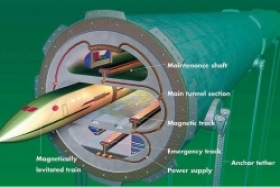
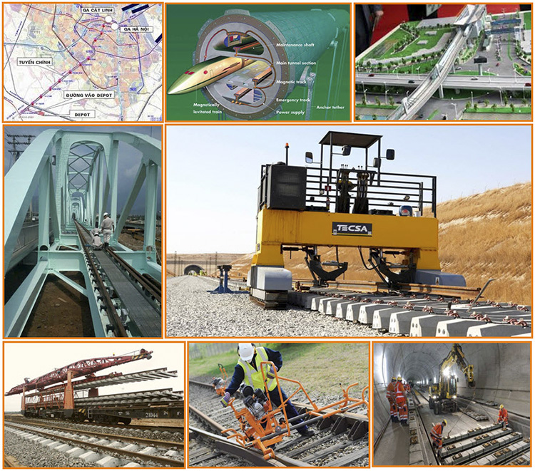

09/03/2016 14:01

1. Mục tiêu đào tạo chung của chuyên ngành
Chương trình đào tạo Đại học Chính quy Công nghệ kỹ thuật xây dựng cầu đường sắt nhằm trang bị cho người học sau khi tốt nghiệp có kiến thức khoa học cơ bản, cơ sở, kỹ thuật chuyên môn toàn diện, năng lực thực hành nghề nghiệp cơ bản, năng lực tư duy sáng tạo, khả năng thích ứng nhanh với những biến đổi trong lĩnh vực công nghệ xây dựng cầu đường sắt; có đạo đức nghề nghiệp, có sức khỏe đáp ứng yêu cầu xây dựng và bảo vệ Tổ quốc.
2. Các công việc sinh viên phụ trách sau tốt nghiệp
Các kỹ sư Cầu đường sắt có thể đảm nhiệm các công việc nghiên cứu, thiết kế, tư vấn giám sát, quản lý dự án, thi công xây dựng các công trình Cầu, Đường sắt, Đường bộ.
Nơi làm việc: Làm việc tại các cơ quan đào tạo - nghiên cứu khoa học, các cơ quan quản lý nhà nước, các đơn vị tư vấn thiết kế (kể cả các Công ty nước ngoài); các doanh nghiệp xây dựng công trình giao thông, các Sở Giao thông công chính và các ngành kinh tế khác.
Các công việc sinh viên có thể thực hiện sau khi ra trường:
+ Tổ chức công tác đo đạc khảo sát thu thập số liệu cần thiết cho thiết kế công trình cầu đường sắt;
+ Thiết kế; thiết kế thi công công trình cầu đường sắt;
+ Chỉ đạo tổ chức thi công xây dựng công trình: Đường giao thông, hệ thống thoát nước, hạ tầng kỹ thuật các khu đô thị...
+ Kiểm tra và nghiệm thu chất lượng công trình cầu đường sắt;
+ Lập, tổ chức thực hiện, quản lý các dự án đầu tư xây dựng công trình cầu đường sắt;
+ Quản lý khai thác, kiểm định chất lượng công trình cầu đường sắt;
+ Sử dụng ngoại ngữ, công nghệ thông tin để nghiên cứu, ứng dụng hiệu quả tiến bộ khoa học - công nghệ trong lĩnh vực kỹ thuật xây dựng cầu đường sắt.

Các dự án Đường sắt lớn đã và đang khởi công:
+ Các gói dự án cải tạo nâng cấp cầu đường sắt (trên tất cả các tuyến đường sắt);
+ Đường sắt Cao tốc Bắc - Nam;
+ Tuyến Đường sắt: Sài Gòn - Vũng Tàu; Sài Gòn - Lộc Ninh; Sài Gòn - Cần Thơ...
+ Các tuyến Đường sắt Đô thị tại TP. Hồ Chí Minh: Bến Thành - Suối Tiên, Bến Thành - Tham Lương, Bến Thành - Tân Bình...
+ Các tuyến Đường sắt Đô thị tại Hà Nội: Cát Linh - Hà Đông, Nhổn - Ga Hà Nội, Nam Thăng Long - Tây Hà Nội...
3. Quan điểm xây dựng chương trình học cho sinh viên và nội dung chương trình học
Quan điểm xây dựng chương trình học cho sinh viên:
+ Cung cấp cho sinh viên đầy đủ các kiến thức khoa học cơ bản, cơ sở ngành để giúp sinh viên tiếp thu hiệu quả những kiến thức chuyên môn của ngành học;
+ Tăng cường các học phần thực hành thực tập, giúp sinh viên tiếp cận với môi trường thực tiễn, rút ngắn khoảng cách giữa nhà trường và môi trường làm việc sau khi ra trường;
+ Chương trình đào tạo được cập nhật những kiến thức mới, các công nghệ tiên tiến của Việt Nam và trên thế giới;
+ Cung cấp cho sinh viên những công cụ hỗ trợ học tập và làm việc như: các phần mềm chuyên dụng, ngoại ngữ, tin học;
+ Rèn sinh viên khả năng tư duy tự học, tự tích lũy bổ sung kiến thức, tư duy nghiên cứu khoa học để có khả năng nghiên cứu chuyên sâu;
+ Rèn cho sinh viên các kỹ năng phân tích, đánh giá, tổng hợp giải quyết những vấn đề trong lĩnh vực chuyên ngành; rèn luyện khả năng thuyết trình, làm việc hiệu quả theo nhóm;
+ Song song với học kiến thức chuyên ngành là rèn luyện thể chất, thái độ và tác phong làm việc, thái độ phục vụ, đạo đức nghề nghiệp nhằm giúp sinh viên phát triển một cách toàn diện nhất.
| STT | Khối kiến thức | Bắt buộc | Tự chọn | Tổng |
|---|---|---|---|---|
| 1 | Khối kiến thức giáo dục đại cương | 43 | 4 | 47 |
| 2 | Kiến thức giáo dục chuyên nghiệp | 115 | 10 | 125 |
| 2.1 | Kiến thức cơ sở ngành | 43 | 4 | 47 |
| 2.2 | Kiến thức ngành | 39 | 6 | 45 |
| 2.3 | Thực tập nghề nghiệp | 21 | 21 | |
| 2.4 | Thực tập tốt nghiệp | 4 | 4 | |
| 2.5 | Đồ án tốt nghiệp | 8 | 8 | |
| Tổng cộng | 158 | 14 | 172 |
4. Kế hoạch học trong 5 năm
Nội dung chi tiết của kế hoạch đề nghị xem tại tệp đính kèm.